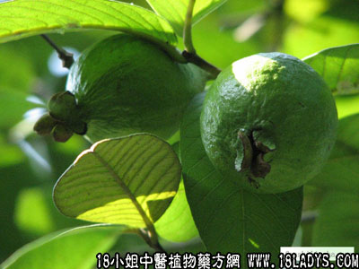

别名：番捻、鸡屎果。
植物名：番石榴。
生长环境：本品为灌木或小乔木多生于路旁、河旁或丘陵地带的灌木丛中。
分布：原产美洲。我国南部普遍栽培，山野间也有野生的。
入药部分：叶。
采集期：全年奇叶茎，夏秋采果。
自采地点：家种。
性味：性微温、味苦、气香。
功能：收敛止泻、健脾胃、消滞、去发污，辟臭味。
主治、用量和用法：1、食滞：干叶3～5钱，清水煎服；2、泄泻：用法同上；3、去发污秽异味：取嫩叶干用适量。
附录：（茎二层皮）治疗跌打瘀肿：鲜用捣烂，加酒煮热外敷。
（果）治小儿泄泻：未成熟果，晒干3～5钱，清水煎服。
参考资料：《广东中医》（1960.1）顺德县人民医院报告：番石榴叶煎剂治疗非感染性腹泻47例，均获疗效，无不良副作用。
《广州市中医验方选集第一集》兴隆卫生所介绍治小儿泄泻不止、无腹痛验方：晒干大蕉皮一只，石榴皮4件，清水煎服。